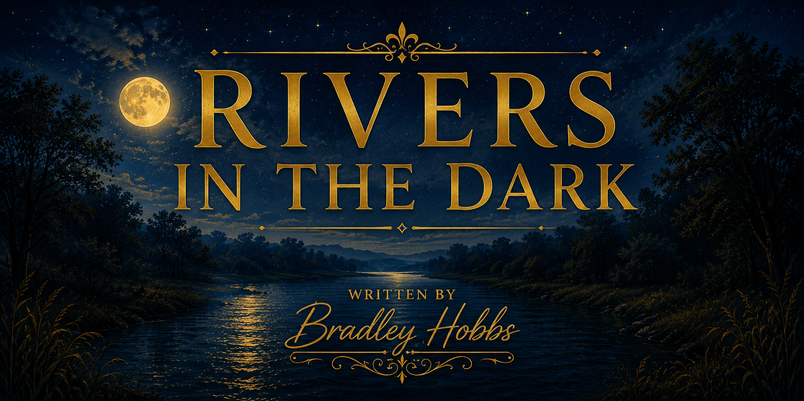

THE STORY
What the Book Explores
A reflective story of faith, fatherhood, purpose, compassion, and the quiet ways hope can find its way into ordinary life.
Explore the Contents →
A story about faith, purpose, fatherhood, and discovering rivers of hope where nobody expects them.
Not every turning point arrives with an announcement. Sometimes it begins with a question, a conversation, or a small moment that asks us to see life differently.
Brad thought life had become routine. Work, responsibilities, and unanswered questions weighed heavily on his heart. Through unexpected moments with his son Gabe, simple acts of compassion, and the gentle leading of Jesus, a journey begins that changes everything. Life begins shifting through quiet whispers, unexpected moments, and rivers that flow through places many never notice.
Discover the story's central themes, meet the author, and follow the chapters in sequence.
A reflective story of faith, fatherhood, purpose, compassion, and the quiet ways hope can find its way into ordinary life.
Explore the Contents →Learn more about Bradley Hobbs, the heart behind the story, and the themes that shaped this work.
About Bradley Hobbs →Start with the introduction, then continue through each chapter at your own pace.
Step into the questions, quiet moments, and hope that shape the journey ahead.
Read the Introduction →Every journey has a beginning. This one starts in the middle of ordinary life.
Read Chapter One →Follow the complete reading order and move through the story one chapter at a time.
View All Contents →Some of the most meaningful changes begin where nobody else is looking. May this story remind you that quiet seasons are not empty seasons, and that grace can meet us even in the dark.